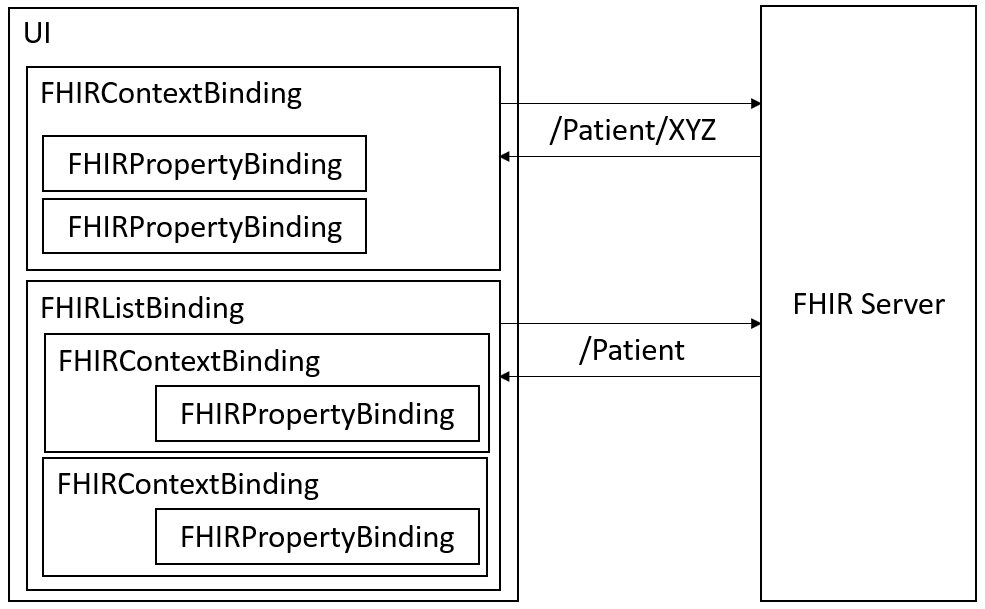
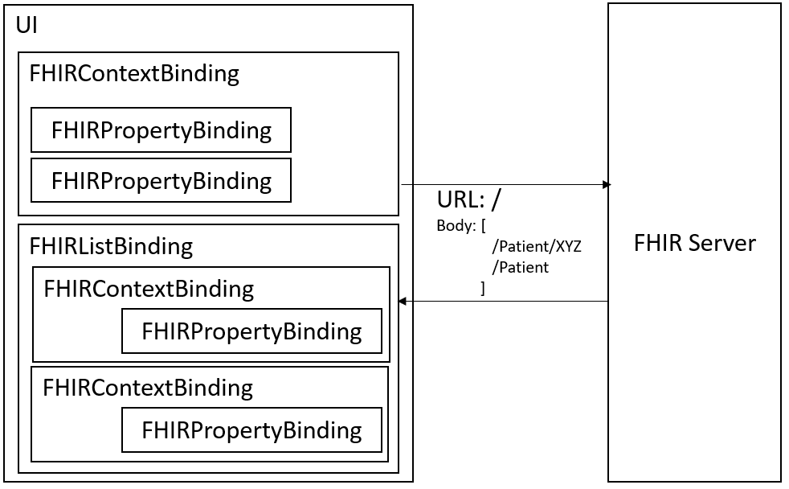

FHIR® provides two different kinds of requests. Resources can either be created, read, updated and deleted with a direct HTTP call, or one or more requests can be packed in bundles. The following chapter explains the configuration of request handling.
Hint: For UI5 applications based on a FHIR® server, the recommendation is to use bundle requests to reduce the number of requests and to avoid potentially patient-specific data in the URL. Nevertheless, there might be use cases where the application developer will use direct HTTP requests,for example, when the FHIR® server cannot process bundle requests.
Step 4.1: Direct Requests
Out of the box, the UI5 FHIR Model requests and submits data as direct requests. This mode lets the URL contain the following syntax:
VERB [base]/[type]/[id] {?_format=[mime-type]}
VERB: The HTTP verb used for the interaction (GET, POST, PUT, DELETE)base: The FHIR® server base URL (http://myfhirservice.com/fhir/)type: The name of a resource type (for example, "Patient")id: The logical ID of a resourcemime-type: The mime-type (JSON or XML)
For more information about the FHIR® RESTful API, see the FHIR®-Documentation.
Example: Binding a Panel to a Specific Patient and Show a List of All Patients Below
<Panel id="myPatient" binding="{/Patient/XYZ}">
<Input value="{name/[use=official]/family}"/>
<Input value="{name/[use=official]/given}"/>
<Button text="Save" press="onSavePress"/>
</Panel>
<List items="{/Patient}">
<StandardListItem title="{name/[use=official]/family}, {name/[use=official]/given}"/>
</List>
| With this UI, the model detects one FHIRContextBinding and one FHIRListBinding. Both are requesting their needed data in a separate HTTP call. The first call is `http://myfhirservice.com/fhir/Patient/XYZ`, the second call is `http://myfhirservice.com/fhir/Patient`. Direct requests support all functionalities of the FHIR® RESTful API. When you use this type of request, every binding triggers individual requests. So, the number of requests depends on how many bindings are declared on an UI. Now, a user can change the name of a single patient and save all changes by pressing the save button. This is possible by executing the `submitChanges` method of the model: |  |
onSavePress: function(){
this.getView().getModel().submitChanges();
}
Step 4.1.1: RESTful based Search via POST Requests
When a FHIR® server supports GET in search requests it could mean that PHI (Personal health information) might appear in search parameters and thereby https logs. To prevent such sensitive information from being logged FHIR® specification suggests the server that support search SHALL also support a POST based search.
To enable this feature from the model the manifest.json is initialised with the following settings
"models": {
"": {
"type": "sap.fhir.model.r4.FHIRModel",
"dataSource": "local",
"settings": {
"search":{
"secure": true
}
}
}
}
Step 4.2: Bundle Requests
| FHIR® bundle requests have some advantages over direct requests. The number of requests between the UI and the FHIR® server can be reduced to a minimum, and the requested URL only contains the service base URL. FHIR® provides two different types of bundle requests (`batch` and `transaction`). Both types submit a set of one or more actions via an HTTP request to the FHIR® server, which performs the different actions either independently as a batch or as a single atomic transaction. This implicates that if one or more actions fail, the other actions will be performed anyway (`batch`) or all other actions will not be performed at all (`transaction`). For more information about FHIR® bundle requests, see the [FHIR®-Documentation](https://www.hl7.org/fhir/http.html#transaction). |  |
Step 4.2.1: Declaration of Groups
Depending on the use case, every binding can be configured to use either batch or transaction. This can be done by introducing binding groups. Application developers decide which binding groups are necessary for a particular UI5 application and which request type should be used for these groups before assigning these groups to the associated bindings. With this concept, it’s possible to reduce the number of HTTP requests to an appropriate level for the respective UI5 application. The declaration of groups is done in the manifest.json of the UI5 application.
With using batch or transaction as request type, the different requests are packed in a bundle as bundle entries. Every bundle entry has to contain the property fullUrl. This fullUrl property is of FHIR® datatype uri which can be an url, canonical, uuid or oid. Since version 1.1.0 url and uuid is supported by openui5-fhir. With uuid the fullUrl property is generated with following syntax urn:uuid:uuidv4, e.g. "urn:uuid:e91a94c7-b874-4b46-af6a-3412b487c3af". With url the fullUrl property is generated with following syntax http://fhirServerUrl/ResourcePath, e.g. "http://example.com/Patient/123"
For more information see the FHIR®-Documentation.
Example: Declaration of two groups A and B. All bindings of group A should be processed with a batch request, all bindings of group B should be processed with a transaction request.
"models": {
"": {
"type": "sap.fhir.model.r4.FHIRModel",
"dataSource": "local",
"settings": {
"groupProperties": {
"A": {
"submit": "Batch",
"fullUrlType":"uuid"
},
"B": {
"submit": "Transaction"
}
}
}
}
}
webapp / manifest.json
Step 4.2.2: Assignment of Groups
To assign a binding to a specific group, you need to add the groupId parameter to the binding declaration.
Example: Binding a Panel to a Specific Patient and Show a List of All Patients Below, Which Should Be Processed in One Group
<Panel id="myPatient" binding="{path: '/Patient/XYZ', parameters: {groupId: 'A'}}">
<Input value="{name/[use=official]/family}"/>
<Input value="{name/[use=official]/given}"/>
<Button text="Save" press="onSavePress"/>
</Panel>
<List items="{path: '/Patient', parameters: {groupId: 'A'}}">
<StandardListItem title="{name/[use=official]/family}, {name/[use=official]/given}"/>
</List>
Step 4.2.3: Submitting Changes and Callback Parameters
By introducing of the group concept, you can also control which changes will be send to the FHIR® server by mentioning the groupId when submitting the changes. Now, only the changes that are triggered by bindings assigned to group A are send to the FHIR® server.
onSavePress: function(){
this.getView().getModel().submitChanges("A");
}
Depending on the submit mode the callback will be invoked with specific type of parameters.
If the group submit mode is Batch/Transaction then the success callback will contain all the FHIR Resources which were part of the request and in case of failed enteries in Bundle the error callback will be invoked with the successful resources and the operation outcome enteries.
onSavePress: function() {
var fnSuccessCallback = function(aFHIRResource){
// Here the list of resources which got processed successfully as part of bundle request can be accessed
}
var fnErrorCallback = function(oMessage, aFHIRResource, aFHIROperationOutcome){
// all the successful and failure resources as part of bundle can be accessed
}
this.getView().getModel().submitChanges("A", fnSuccessCallback, fnErrorCallback);
}
Step 4.3: Mixed Mode
Furthermore, you can mix the direct and bundle requests in one UI5 application with the group concept. If a binding should send a direct request and not be packed as a bundle request, the desired group has to be configured in manifest.json with Direct as the value of the submit property.
Example: Declaration of Three Groups That Perform Batch, Transaction, and Direct Requests
"models": {
"": {
"type": "sap.fhir.model.r4.FHIRModel",
"dataSource": "local",
"settings": {
"groupProperties": {
"A": {
"submit": "Batch"
},
"B": {
"submit": "Transaction"
},
"C": {
"submit": "Direct"
}
}
}
}
}
With this declaration, all bindings assigned to the group C will trigger separate direct requests. Also, the submit of the changes with this.getView().getModel().submitChanges("C"); will lead to multiple requests. The other bindings assigned to group A or B still send bundle requests.